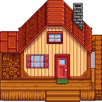

Casa della fattoria
| Casa della Fattoria | |
.png) | |
 | |
| Chiuso: | N/A |
| Indirizzo: | La fattoria |
Quando il gioco inizia, la Casa della fattoria ha solo una piccola stanza che contiene un letto singolo, un camino, una vecchia TV (una TV economica o una TV da pavimento), varie decorazioni in base allo stile di fattoria che si ha selezionato, e un tappetino dal design variabile. La superficie esterna della casa è un rettangolo di 6x9.
La pavimentazione e la carta da parati possono essere cambiati usando i modelli acquistabili dall'Emporio di Pierre o da JojaMart. Nuovi mobili e decorazioni possono essere aggiunti in ogni momento.
I miglioramenti possono essere comprati dalla Bottega del falegname, dentro la casa di Robin. Ogni nuova stanza che si ottiene migliorando la casa può avere i propri modelli di pavimentazione e carta da parati.
Una volta che si è sposati o che si ha Krobus come coinquilino, il gioco aggiungerà automaticamente una stanza extra basata sullo stile di quel personaggio.
Interni
.png/180px-House_indoors_(tier_1).png)


Miglioramenti
Robin impiegherà 3 giorni per terminare il miglioramento.
| Miglioramento | Immagine esterna | Immagine interna | Costo | Cambiamenti |
|---|---|---|---|---|
| 1 |  | .png/240px-House_indoors_(tier_2).png)
|
|
Aggiunge una cucina, con un banco che permette di cucinare, e un frigorifero che funge da cassa. Gli oggetti nel frigorifero possono essere usati per cucinare anche se non si trovano nell'inventario del giocatore. Migliora il letto da singolo a matrimoniale. Miglioramento necessario per un matrimonio. |
| 2 | .png)
|
.png/240px-House_indoors_(tier_3).png)
|
|
Aggiunge due nuove stanze, una vuota e una con una culla e due letti singoli, questi permetteranno di avere figli. Cucina e camera da letto diventano più grandi. Sblocca le rinnovazioni. |
| 3 |
|

|
Aggiunge una cantina sotto la casa, alla quale si accede dalla cucina. Le botti della cantina possono invecchiare formaggi e vini per farli aumentare di qualità e valore. La cantina viene fornita con 33 botti, anche se può ospitare fino a 189 botti. | |
| Ristrutturazioni |
|

|
Tutte le ristrutturazioni sono gratuite | Sbloccate dopo aver completato il secondo miglioramento della casa. La rimozione della culla impedisce al giocatore di avere altri bambini. Aprendo la camera da letto si rimuove il muro che separa la camera da letto dall'ingresso. L'aggiunta della stanza a sud aggiunge una stanza a sud della camera da letto. L'aggiunta della stanza d'angolo aggiunge una stanza all'angolo nord-est della casa. |
Stanze dei coniugi/coinquilini


Obiettivi
Ci sono 2 Obiettivi relativi alla Casa della fattoria.
- Verso l'Alto (Amplia la tua casa)
- Vivere in Grande (Amplia la tua casa fino alle dimensioni massime)
Non si ottiene nessun obiettivo con il terzo miglioramento (che aggiunge la cantina).
Note
- L'icona della lente d'ingrandimento sopra la catasta di legna a sinistra della casa è collegato alla missione "Il misterioso Qi".
- Invece di raccogliere 450 pezzi di legna per il primo miglioramento, si possono acquistare tutti dalla Bottega del falegname durante il 1° anno per
 4 500o, o dal 2° in poi per 22 500o. Il costo totale del miglioramento sarebbe 14 500o nel 1° anno, o 32 500o dal 2° in poi.
4 500o, o dal 2° in poi per 22 500o. Il costo totale del miglioramento sarebbe 14 500o nel 1° anno, o 32 500o dal 2° in poi.
Storia
- 1.0: Introdotta.
- 1.1: Aggiunte stanze uniche per Shane ed Emily da sposati. Introdotto terzo miglioramento per la casa della cantina. I giocatori possono ora applicare carta da parati ai corridoi nelle case migliorate.
- 1.3: La case di fattorie in collina e silvestri iniziano con un camino di pietra invece del camino in mattoni. I camini sono ora decorazioni spostabili.
- 1.4: Aggiunta stanza unica per Krobus quando diventa coinquilino del giocatore.
- 1.5: Aggiunta l'opzione per spostare i letti. Aggiunte ristrutturazioni per la casa.